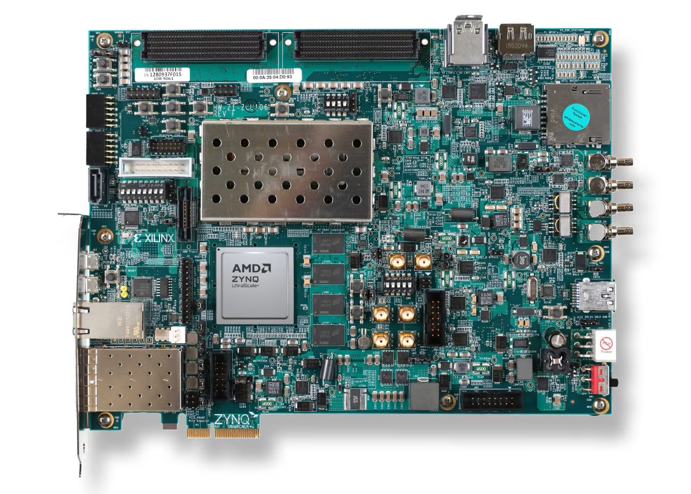

FPGA Accelerators for GNSS
Hardware acceleration project that went from RTL to published papers. One pushed
GNSS matrix math to 50× faster on a space-grade FPGA at ISRO.
IEEE Publication Link

Yeah, just the board i used
FPGA Matrix Multiplier for GNSS (ISRO)
During my time at the Space Applications Center (ISRO), I worked on GNSS-based satellite positioning algorithms that needed to run on a space-grade FPGA board. The bottleneck was matrix multiplication, GNSS positioning involves heavy linear algebra, and the software implementation on the existing processor couldn't keep up with real-time demands. And the best part, the data which needs to be processed is 64 bits, and the FPGA supports 32 bit floating operation. So what did I do? I got the data in 32 bits and combined it in the FPGA, did the operation in the custom HLS IP and then pushed the data in 32 bits again to then join it back in the host server. So that was slick! Right?
Okay, so what do I need? The GNSS data needs to be processed and acquired in under 10 seconds, because that is when the GNSS data will change, making the result useless! So I tried pipelining, parallel threading (kinda!?), vectorization, changing storage elements on the FPGA and more. Eventually I developed GNSS positioning algorithm in C and Verilog and created custom hardware accelerators using Vivado HLS. The accelerators were integrated into the system via AXIS and DMA protocols, enabling real-time data ingestion from MATLAB for testing and validation. By optimizing the matrix multiplication kernels on FPGA, I achieved more than 50× improvement in throughput for real-time GNSS data processing compared to the software baseline. Technically my design was O(N^2) and O(Nmax^2), so technically the HLS design would run faster if the matrices are different sizes, which is in my case and it turned out to make use of the hardware in a better, dynamic way!
Tech Stack
Results
- 50×+ throughput improvement for GNSS matrix multiplication on FPGA vs. software
- Real-time data ingestion via custom AXIS/DMA integration with MATLAB
What I Took Away
Working at ISRO taught me what "mission-critical" really means you don't get to ship a bugfix to space. The FPGA work forced me to think in terms of parallelism and pipelining, which is a fundamentally different mindset from software. And going through the IEEE publication process gave me experience translating engineering results into rigorous academic contributions.